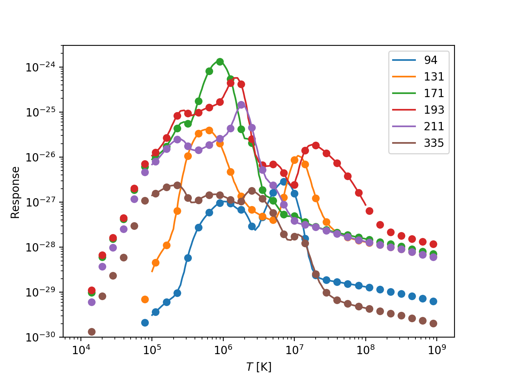

AIA Response Functions
The temperature response functions of the EUV channels of the Atmospheric Imaging Assembly (AIA) are used to understand the temperature of the plasma observed by the different telescopes on the instrument. While these are difficult to calculate, SSW provides a single simple routine to calculate them.
First, import the needed libraries,
import numpy as np import matplotlib.pyplot as plt import hissw
Next, we need to write the IDL code that will calculate the response functions. Because it is a bit long, we'll put it in a separate file, calc_aia_response.pro. Note the Jinja2 syntax (denoted by the {{}}) we use to inject our Python variables into the script.
response = aia_get_response(/{{ flags | join(',/') }}) ; Pull needed elements out of structure logt = response.logte resp94 = response.a94.tresp resp131 = response.a131.tresp resp171 = response.a171.tresp resp193 = response.a193.tresp resp211 = response.a211.tresp resp335 = response.a335.tresp ; Interpolate interp_logt = {{ interp_logt }} interp_resp94 = interpol(resp94,logte,interp_logte) interp_resp131 = interpol(resp131,logte,interp_logte) interp_resp171 = interpol(resp171,logte,interp_logte) interp_resp193 = interpol(resp193,logte,interp_logte) interp_resp211 = interpol(resp211,logte,interp_logte) interp_resp335 = interpol(resp335,logte,interp_logte)
One of the best parts of hissw is that we can setup all of our input arguments in Python. Note that arrays have to be formatted as lists.
interp_logt = np.linspace(5,8,1000) flags = ['temp','dn','timedepend_date','evenorm'] inputs = {'flags': flags, 'interp_logt': interp_logt.tolist()}
Now create the SSW script environment and run the script. We need to include the SDO/AIA package (which you'll need to install with SSW if you haven't already) so that the appropriate files are added to the IDL path.
ssw = hissw.ScriptMaker(ssw_packages=['sdo/aia'], ssw_paths=['aia']) ssw_resp = ssw.run('/path/to/calc_aia_response.pro', args=inputs)
Finally, plot the response functions for all 6 EUV channels, showing the original (dots) and interpolated (line) values,
t = 10.**ssw_resp['logte'] interp_t = 10.**interp_logte for i,channel in enumerate([94,131,171,193,211,335]): plt.plot(t, ssw_resp[f'resp{channel}'], 'o', color=f'C{i}', markevery=3) plt.plot(interp_t, ssw_resp[f'interp_resp{channel}'], '-', color=f'C{i}', label=f'{channel}') plt.xlabel(r'$T$ [K]') plt.ylabel('Response') plt.xscale('log') plt.yscale('log') plt.ylim(1e-30,3e-24) plt.legend() plt.show()
